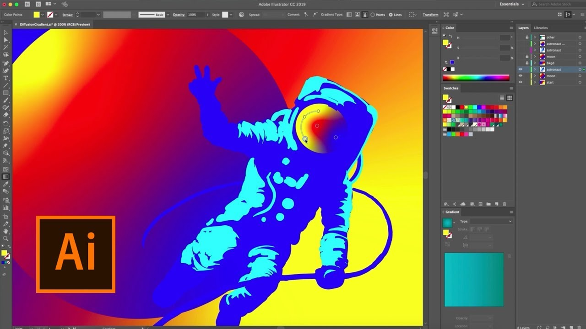
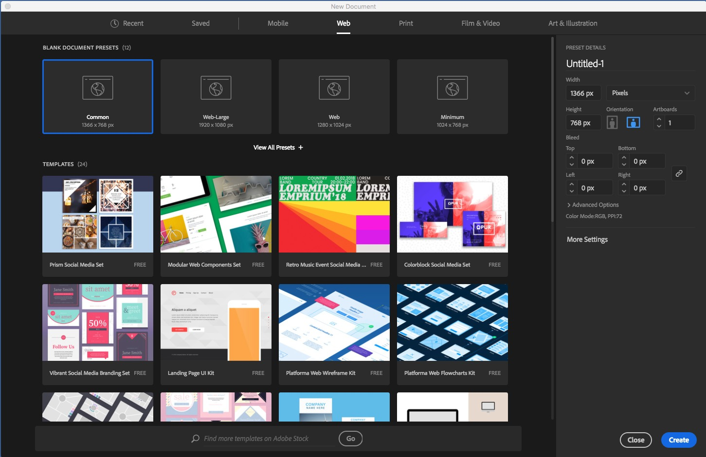
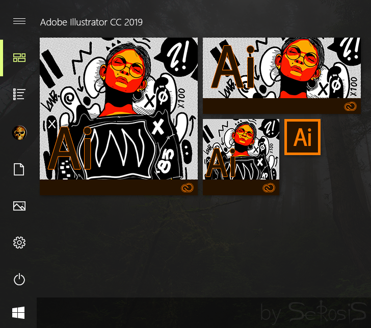
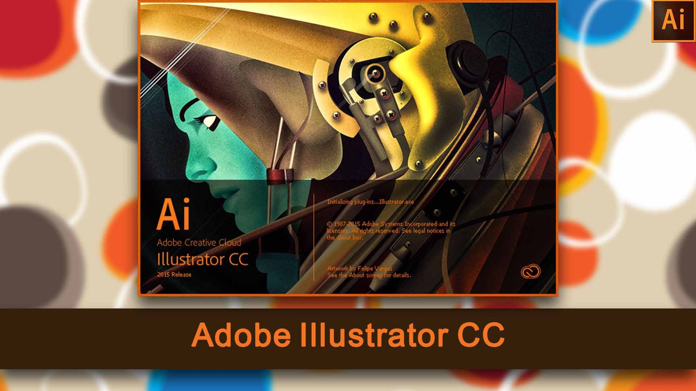
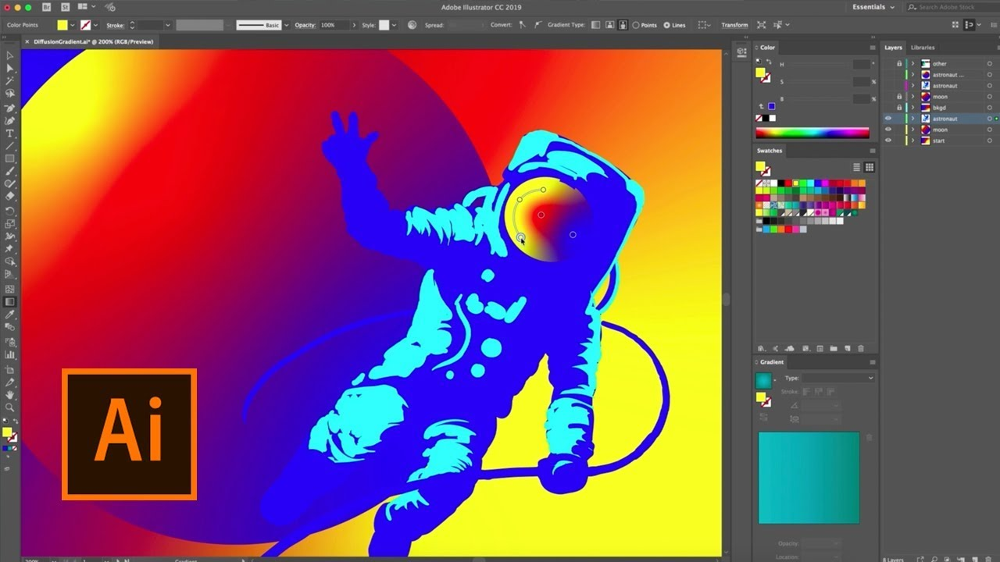
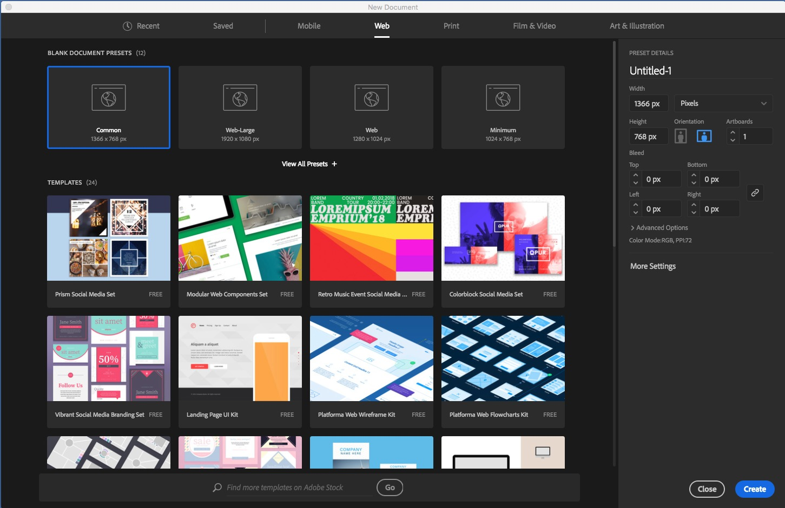
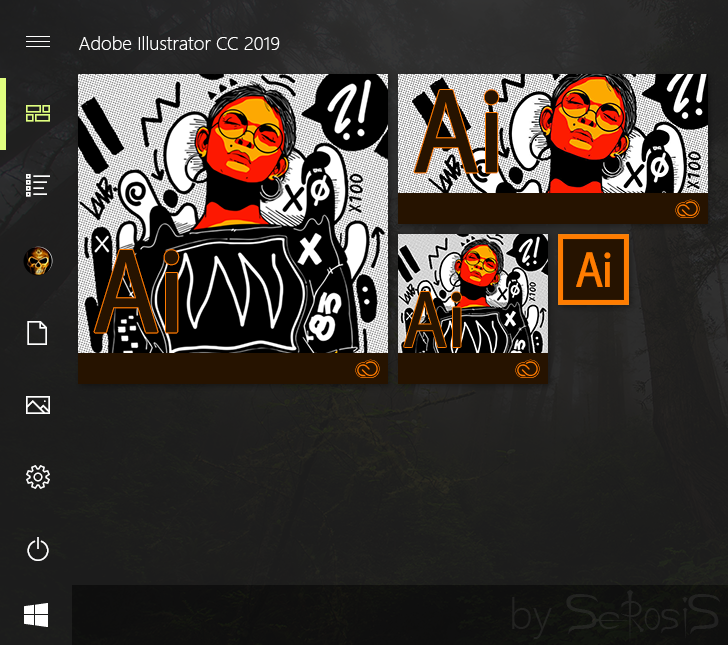
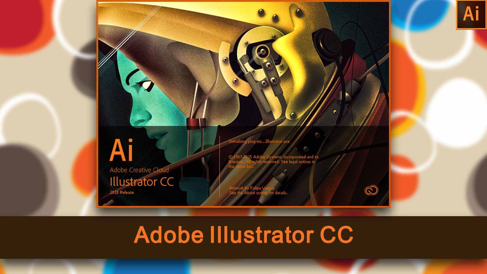

- Descripción
- Características
- Capture
- Cambios recientes
Adobe Illustrator CC 2023 Full Crack Descarga Gratis MEGA
Adobe Illustrator CC Full 2023 es el entorno de dibujo vectorial estándar de la industria para el diseño en todo tipo de soportes en su última versión. Listo para su descarga en español Exprese su visión creativa con formas, colores, efectos y tipografía. Adobe Illustrator CC 2023 crack trabaja con velocidad y estabilidad en archivos grandes y complejos, y mueve diseños de forma eficaz entre las aplicaciones creativas de Adobe.
Las tareas familiares ahora se agilizan, desde la edición en línea de los nombres de las capas hasta el muestreo preciso de los colores. El software Adobe Illustrator CC 2023 Full Crack incluye el Adobe Mercury Performance System, con soporte nativo de 64 bits para Mac OS y Windows que permite realizar tareas como abrir, guardar y exportar archivos de gran tamaño y previsualizar diseños elaborados.
La herramienta de tipo táctil de Adobe Illustrator CC 2023 + Licencia le ofrece un control aún mayor sobre el tipo: Mover, escalar y rotar caracteres individuales sabiendo que puede cambiar la fuente o copiar en cualquier momento.
Características de Adobe Illustrator CC 2023 + Patch
- Adobe Illustrator CC 2023 Activado Cree un diseño de píxeles perfecto
- Dibuje trayectorias y formas que se alinean perfectamente con la cuadrícula de píxeles. Alinee las ilustraciones existentes con un solo clic o usando transformaciones simples. Conserve las formas vivas y las esquinas redondeadas, mantenga la alineación al escalar y rotar objetos, y alinee manualmente los segmentos y los puntos finales para lograr una alineación perfecta.
- Encuentre fuentes más rápido
- Marque las fuentes individuales como favoritas para encontrar rápidamente la que necesita. Filtra tu lista para ver las fuentes que has usado recientemente, encuentra otras que sean similares a las que te gustan, o encuentra fuentes basadas en clasificaciones como serifas o manuscritas.
- Trabajar más fácilmente con glifos
- Utilice glifos alternativos para cualquier carácter simplemente seleccionando el carácter y eligiendo en un menú contextual. Vea e inserte los glifos usados más recientemente y ordene los glifos para una navegación más rápida.
- Empiece más rápido
- Ponga en marcha proyectos de diseño con fácil acceso a las configuraciones prefijadas, así como plantillas gratuitas de Adobe Stock a las que puede acceder directamente desde Archivo > Nuevo.
- Adobe Illustrator CC 2023 + Activación Plantillas de stock y búsqueda
- Adobe Stock Marketplace incluye nuevas plantillas de diseño y ahora puede arrastrar y soltar los resultados de la búsqueda de acciones desde el panel de la biblioteca hasta el lienzo y empezar a utilizarlos de inmediato. Además, puede hacer clic con el botón derecho del ratón en una imagen de archivo para realizar una búsqueda visual de imágenes similares.
- Nuevas funciones de las bibliotecas de Creative Cloud Libraries
- Las bibliotecas de Illustrator ahora admiten plantillas de Adobe Stock. Además, Send Link ha sido actualizado para que pueda compartir el acceso de sólo lectura a una biblioteca pública. Cuando sigue una biblioteca, ésta aparece en el panel Biblioteca y se actualiza automáticamente.
- Mejoras en los activos de la nube creativa
- Archive y restaure todos los activos almacenados en Creative Cloud, incluidos los de las bibliotecas de Creative Cloud, los activos creados con productos de escritorio CC y los proyectos móviles.
- Presentación del Mercado Typekit
- Ahora puede comprar fuentes de algunos de los nombres más importantes del sector y utilizarlas en sus proyectos de Illustrator. Typekit utiliza sus tecnologías web y de sincronización de fuentes para entregar sus fuentes Marketplace en cualquier lugar donde las necesite.
- Mejoras en la fuente y el texto
- Vea una vista previa en vivo colocando el cursor sobre la lista de fuentes con el texto seleccionado, coloque el texto cargado dentro de un contenedor o llene un contenedor con texto de marcador de posición para visualizar mejor sus diseños. Trabaje fácilmente con objetos tipográficos que tienen una familia tipográfica común pero estilos diferentes, y viceversa.
- Zoom a la selección
- Vea y edite más rápido ahora que puede ampliar cualquier cosa que haya seleccionado: un punto activo, un segmento, una ruta o un objeto.
- Experiencia de usuario moderna
- Una interfaz de usuario plana y nuevos iconos para herramientas y paneles ofrecen un aspecto más limpio y le ayudan a centrarse en su obra de arte.
- Y mucho más
- También se incluye: Capacidad para archivar, restaurar y ver el historial de versiones de todos los activos almacenados en las bibliotecas de Creative Cloud, los activos creados con productos de escritorio CC y los proyectos móviles.
 
¿Dónde Puedes descargar Adobe Illustrator CC 2023 Full Crack gratis?
Puedes descargar Adobe Illustrator CC 2023 Crack en su arquitectura 64 Bits gratis por MEGA o MEDIAFIRE desde los siguientes enlaces:
- Descarga
- Como activar / Crack
- Datos Tecnicos
Adobe Illustrator CC 2023 Crack y serial en español 64 bits Activado – 2023

Adobe Illustrator CC 2023 Full Crack y serial en español 64 Bits
¿Deseas saber como realizar la descarga?
Si no puedes o sabes realizar la descarga, puedes dirigirte a la guía explicativa en la cual aprenderás a hacer la descarga de manera fácil y rápida, no dudes en verla | Clic Aquí
- ¡Si algún link ha fallado reportarlo en los comentarios! ¡Gracias por tu preferencia!
¿Cómo activar y/o crack Adobe Illustrator CC 2023 Full Crack?
- Primero descarga presionando el botón u enlace correspondiente.
- Para acelerar tu descarga puedes usar IDM Full gran gestor de descargas
- Desinstale la versión anterior con IObit Uninstaller Pro o Revo Uninstaller Pro.
- Desactive su Antivirus.
- Luego extraiga el archivo winrar y abra la carpeta.
- Ejecuta el archivo »exe» o »setup».
- Abra el archivo «Crack» / «Patch» / Keygen, descomprimir si es necesario, copie y pegue en el directorio de instalación y ejecute.
- O utilicé el serial proporcionado para activar el Programa.
- Listo ahora está disfrutando de la última versión de Adobe Illustrator CC 2023.
Nombre Original: Adobe Illustrator CC 2023 Final Full
Idioma: Español (Multilenguaje) | Peso: 1.83 GB | Sistema operativo: Windows | Activador: Crack | Instrucciones: Incluidas | Creador: Adobe
Donde puedo encontrar el archivo Crack? (lo descargué por mediafire).
El Adobe illustrator CC 2021 Viene Pre-activado solo instalar y usar
Y también debo de iniciar sesión en Adobe si es que descargue antes no lo había hecho?
Si iniciar sesión debes
donde consigo la contraseña de descarga?¡ gracias
`www.descarga.xyz` sin las `
Me aparece que quedan 7 días para que termine el periodo de prueba, es normal eso?
Si es normal pasados los 7 dias seguirá activo normalmente
amigo, necesitare el creative cloud obligatoriamente??
No necesariamente, pero se instala para evitar errores
Porque me aparece esto?
desactiva el uac en windows buscalo asi uac y ponlo en minimo
Hola, ya lo hice y me sigue apareciendo el mismo mensaje… que puede ser?
man…que grandes son lpm
Cuando lo quiero instalar me da el siguiente error. Ya lo descargue 2 veces
Parece que se te descarga corrupto intenta usando un gestor de descargas
Solo quería decir que me has salvado la vida, muchas gracias.
Yo, ya desactive el UAC, pero me sigue apareciendo el mismo mensaje
Ejecútalo como administrador
Dale click derecho encima del setup y después en ejecutar como administrador
oigan, porque me pasa esto? me pone que lo tengo que instalar de nuevo, lo instalo de nuevo y me aparece lo mismo
Te faltan algunas DLL deberás descargarla o actualizar tu sistema operativo mediante Windows update
No vale par la vontraseña
www.descarga.xyzsin el httpsHola! Para los que tienen problemas con lo de los siete dias.
Dentro de los archivos descargados hay una carpeta llamada «Fix» y una vez dentro pueden encontrar un archivo llamado «Illustrator.exe»
Para evitar que el software se desactive simplemente tienen que reemplazar el archivo donde hayan instalado Illustrator con el de la carpeta «Fix»
Saludos.
no me acepta la contraseña
www.descarga.xyzactualiza tu winrares compatible con windows 10 profesional??
si
Despues de instalarlo y poner el crack, cuando habro el programa me pide una cuenta, ¿cómo soluciono esto?
Crea una cuenta fake y esa funciona
Hola, buenas tardes! pregunta, en la parte inferior donde aparecen las descargas me figura asi, tendria que aparecer tipo carpeta zip. Como podria solucionarlo??? help me 🙁
Eso ya parece error de la asociación de archivos en tu sistema operativo o navegador, pero al descomprimirlo debería funcionar normalmente
Muchas gracias por el programa, me sirve de maravilla.
Hola, en que carpeta debo instalar el Crack?
En la carpeta donde se instaló el programa por lo general disco local c archivos de programas
cual es la contraseña?
www.descarga.xyzsin comillas y sin httpsDurisimo, graciasss!
Eres un crack amigo!! mil gracias!
Recomendado!!
Gracias!, me fue de enorme utilidad, muy sencillo y rápido de instalar
Thanks bro
Gracias por compartir…